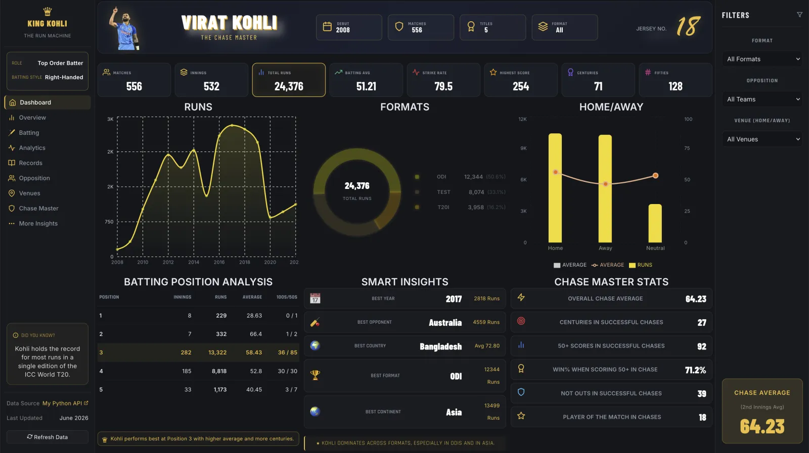
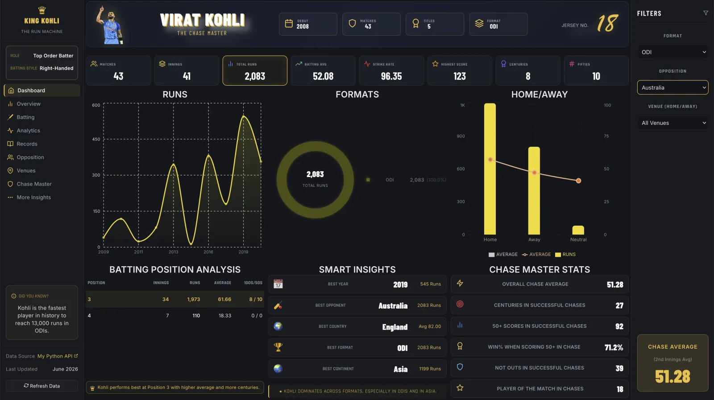

Sports analytics · React / FastAPI / MySQL
Virat Kohli Performance Dashboard
A full-stack cricket analytics app: React charts on a FastAPI API that runs live SQL aggregations over Virat Kohli's career data.
- LiveCareer explorer · rebuilt from the dataset
- ScreenshotOriginal app · screenshots
- CodeFull stack code on GitHub
- Runs in the data
- 28,215
- Stack
- React · FastAPI · MySQL
- Splits
- 20 categories, 116 rows
- Deployed on
- Vercel + Render
A career, queried live.
Source: READMEA full-stack dashboard that analyses Virat Kohli's international career across formats, years, opponents, venues and batting positions.
The React frontend calls a FastAPI backend, which builds SQL queries from the selected filters; MySQL does the aggregation and returns fresh numbers, so every chart updates with the filters instead of showing static images.
Explore the career.
Loading the interactive dashboard…
The original web app.

From click to chart.
Source: README- 01
React frontend
Filters for format, opposition and venue; Recharts visualisations and KPI cards.
- 02
REST API
Each filter change calls the FastAPI backend.
- 03
FastAPI + SQLAlchemy
The backend generates the SQL for the chosen filters.
- 04
MySQL
Runs the aggregations and returns the statistics as JSON.
- 05
Interactive dashboard
The charts and KPIs re-render with the new numbers.
What the app does.
Source: READMEKPI cards
Matches, runs, average, strike rate, hundreds and highest score.
Format filter
Test, ODI and T20I views.
Yearly trends
Runs and form year by year.
Home vs away
Home, away and neutral venues compared.
Batting position
How each batting position has gone.
Smart insights
Best year, opponent, country, format and continent, picked automatically.
Filtered by opponent.

Findings.
- 28,215
runs in 559 international matches at an average of 52.73, with 85 hundreds, across Tests, ODIs and T20Is.
- 58.71
his ODI average: 14,797 runs and 54 hundreds at a strike rate of 93.82, his most productive format.
- 2017
his peak year: 2,818 runs at 68.73, with 11 hundreds.
- 56%
of his runs (15,919) came at No. 3, averaging 58.95 over 332 innings.
- 59.92
his average as captain (12,883 runs in 213 matches), against 47.91 when not captain.
- 5,551
runs against Australia, the most against any team, with 17 hundreds.
Computed from virat_kohli_stats_fixed.csv in the project repository (span 2008–2026, as recorded in the data).
Built with.
Source: README- Frontend
- React · JavaScript · CSS · Recharts
- Backend
- FastAPI · Python · SQLAlchemy
- Database
- MySQL
- Hosting
- Vercel (frontend) · Render (API)
- Built
- Data cleaning, SQL and design by the author; website code AI-assisted under his direction
About the live app.
The original app is deployed on Vercel with its API on Render. When this page was built, the frontend loaded but its API returned a server error, so the live dashboard showed no data.
The explorer above runs on the same dataset directly in your browser, and the screenshots show the original working.